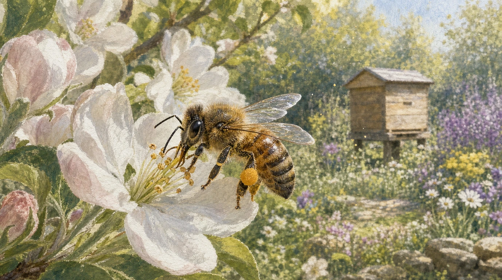
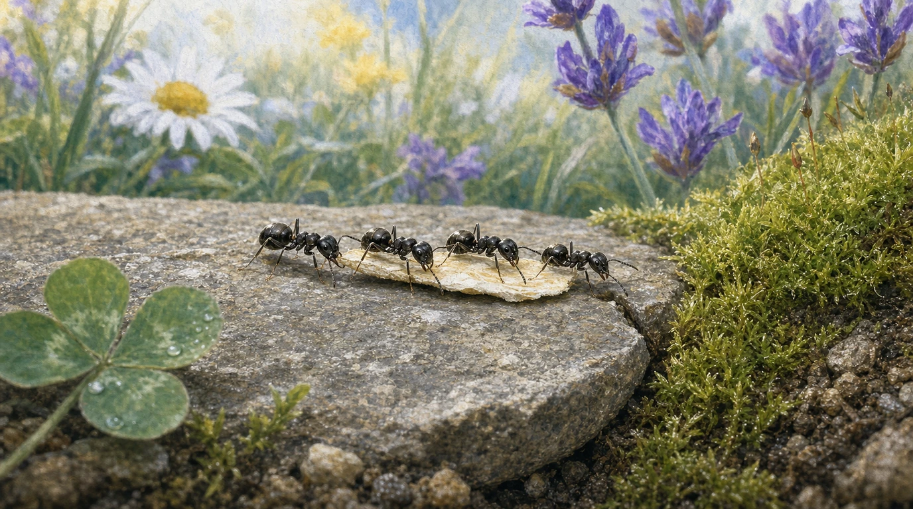
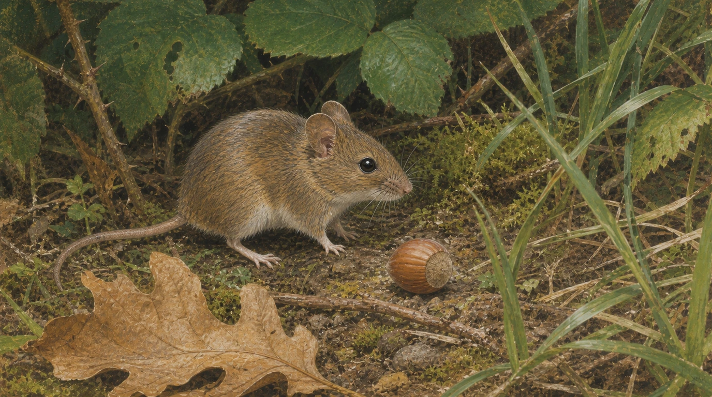
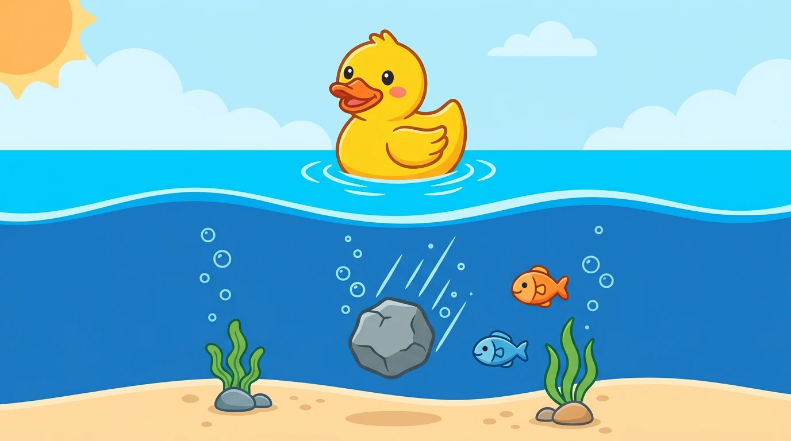
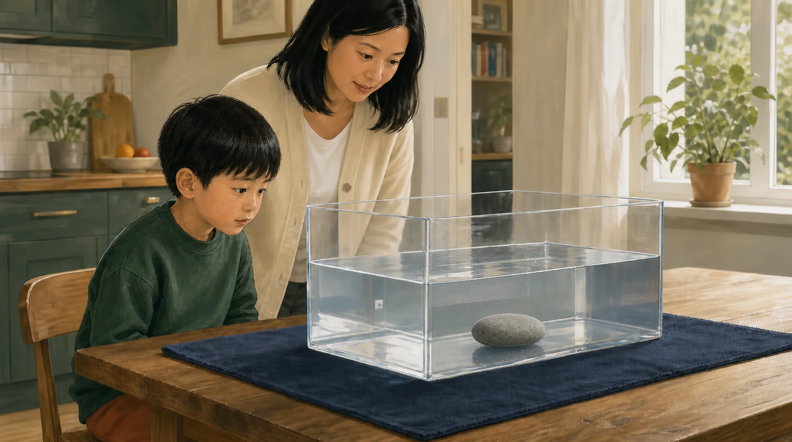
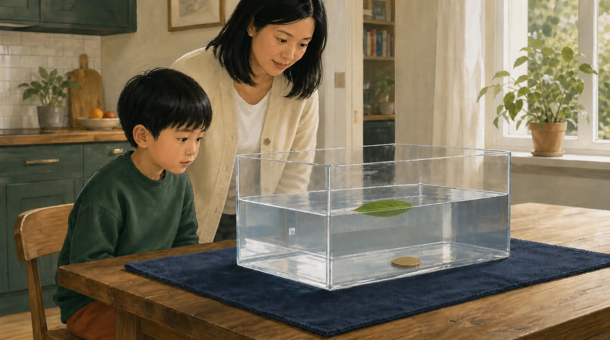
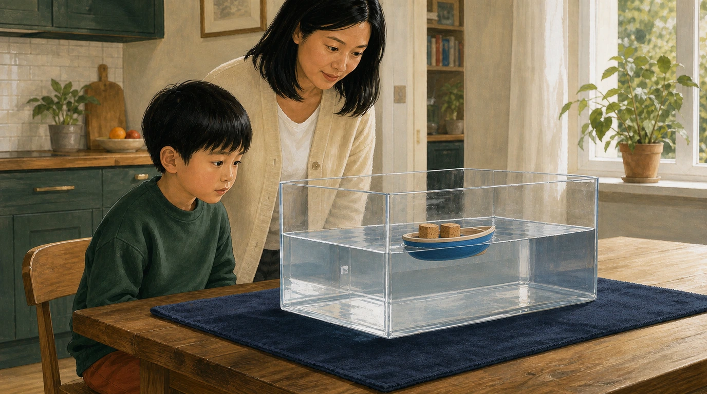
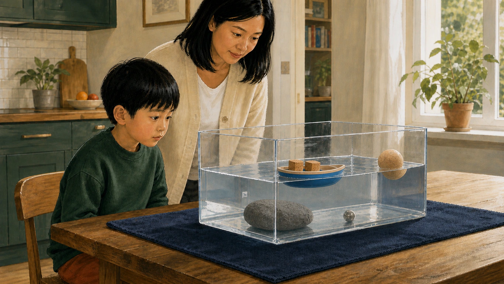

Human visual review only. Automated checks cannot reliably catch anatomy slop.
/guided-reading/nonfiction/first-facts/book-07/page-002.webp/guided-reading/nonfiction/first-facts/book-07/page-003.webp/guided-reading/nonfiction/first-facts/book-07/page-004.webp/guided-reading/nonfiction/first-facts/book-07/page-005.webp/guided-reading/nonfiction/first-facts/book-07/page-006.webp/guided-reading/nonfiction/first-facts/book-07/page-007.webp/guided-reading/nonfiction/first-facts/book-07/page-008.webp/guided-reading/nonfiction/first-facts/book-08/cover.webp/guided-reading/nonfiction/first-facts/book-08/page-001.webp/guided-reading/nonfiction/first-facts/book-08/page-002.webp/guided-reading/nonfiction/first-facts/book-08/page-003.webp/guided-reading/nonfiction/first-facts/book-08/page-004.webp/guided-reading/nonfiction/first-facts/book-08/page-005.webp/guided-reading/nonfiction/first-facts/book-08/page-006.webp/guided-reading/nonfiction/first-facts/book-08/page-007.webp/guided-reading/nonfiction/first-facts/book-08/page-008.webp/guided-reading/nonfiction/first-facts/book-09/cover.webp/guided-reading/nonfiction/first-facts/book-09/page-001.webp/guided-reading/nonfiction/first-facts/book-09/page-002.webp/guided-reading/nonfiction/first-facts/book-09/page-003.webp/guided-reading/nonfiction/first-facts/book-09/page-004.webp/guided-reading/nonfiction/first-facts/book-09/page-005.webp/guided-reading/nonfiction/first-facts/book-09/page-006.webp/guided-reading/nonfiction/first-facts/book-10/cover.webp/guided-reading/nonfiction/first-facts/book-10/page-001.webp/guided-reading/nonfiction/first-facts/book-10/page-002.webp
/guided-reading/nonfiction/first-facts/book-10/page-003.webp/guided-reading/nonfiction/first-facts/book-10/page-004.webp
/guided-reading/nonfiction/first-facts/book-10/page-005.webp/guided-reading/nonfiction/first-facts/book-10/page-006.webp/guided-reading/nonfiction/first-facts/book-10/page-007.webp/guided-reading/nonfiction/first-facts/book-10/page-008.webp/guided-reading/nonfiction/first-facts/book-11/cover.webp/guided-reading/nonfiction/first-facts/book-11/page-001.webp/guided-reading/nonfiction/first-facts/book-11/page-002.webp/guided-reading/nonfiction/first-facts/book-11/page-003.webp/guided-reading/nonfiction/first-facts/book-11/page-004.webp/guided-reading/nonfiction/first-facts/book-11/page-005.webp/guided-reading/nonfiction/first-facts/book-11/page-006.webp/guided-reading/nonfiction/first-facts/book-11/page-007.webp/guided-reading/nonfiction/first-facts/book-12/cover.webp/guided-reading/nonfiction/first-facts/book-12/page-001.webp/guided-reading/nonfiction/first-facts/book-12/page-002.webp/guided-reading/nonfiction/first-facts/book-12/page-003.webp/guided-reading/nonfiction/first-facts/book-12/page-004.webp/guided-reading/nonfiction/first-facts/book-12/page-005.webp/guided-reading/nonfiction/first-facts/book-12/page-006.webp/guided-reading/nonfiction/first-facts/book-12/page-007.webp/guided-reading/nonfiction/first-facts/book-13/cover.webp/guided-reading/nonfiction/first-facts/book-13/page-001.webp
/guided-reading/nonfiction/first-facts/book-13/page-002.webp/guided-reading/nonfiction/first-facts/book-13/page-003.webp/guided-reading/nonfiction/first-facts/book-13/page-004.webp/guided-reading/nonfiction/first-facts/book-13/page-005.webp/guided-reading/nonfiction/first-facts/book-13/page-006.webp/guided-reading/nonfiction/first-facts/book-14/cover.webp/guided-reading/nonfiction/first-facts/book-14/page-001.webp/guided-reading/nonfiction/first-facts/book-14/page-002.webp/guided-reading/nonfiction/first-facts/book-14/page-003.webp/guided-reading/nonfiction/first-facts/book-14/page-004.webp/guided-reading/nonfiction/first-facts/book-14/page-005.webp/guided-reading/nonfiction/first-facts/book-14/page-006.webp/guided-reading/nonfiction/first-facts/book-14/page-007.webp
/guided-reading/nonfiction/first-facts/book-15/cover.webp/guided-reading/nonfiction/first-facts/book-15/page-001.webp
/guided-reading/nonfiction/first-facts/book-15/page-002.webp
/guided-reading/nonfiction/first-facts/book-15/page-003.webp
/guided-reading/nonfiction/first-facts/book-15/page-004.webp
/guided-reading/nonfiction/first-facts/book-15/page-005.webp/guided-reading/nonfiction/first-facts/book-15/page-006.webp/guided-reading/nonfiction/first-facts/book-15/page-007.webp/guided-reading/nonfiction/first-facts/book-16/cover.webp/guided-reading/nonfiction/first-facts/book-16/page-001.webp/guided-reading/nonfiction/first-facts/book-16/page-002.webp/guided-reading/nonfiction/first-facts/book-16/page-003.webp/guided-reading/nonfiction/first-facts/book-16/page-004.webp/guided-reading/nonfiction/first-facts/book-16/page-005.webp/guided-reading/nonfiction/first-facts/book-16/page-006.webp/guided-reading/nonfiction/first-facts/book-16/page-007.webp/guided-reading/nonfiction/first-facts/book-17/cover.webp